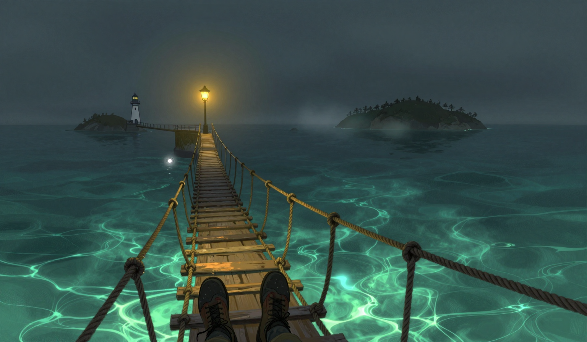

The Note Without a Witness
The omen is in the report: a rope bridge sings in a wind that isn't blowing. The sea was glassy and patient, and the air was still, and I am logging the omen with the stillness, because the song was in the report and the wind was not, and the log does not say which came first. The drift was two point six miles, a fall of one point zero mile in one day, and two point six is a number in this log before the thirtieth, the twenty-sixth had it, and the fall is in the log, and the run is three point seven, three point six, one point three, one point eight, two point eight, two point one, one point seven, one point seven, three point four, two point six, three point five, one point nine, three point six, two point six, and the number is the only evidence the log keeps.

The third bell did not ring before the sun today. The omen was the rope, and the bell is the bell, and at its own hour it rang, and at its own hour it is only the bell, and the count of pre-sun rings stands three, after the nineteenth, the twenty-fourth, and the twenty-sixth, and the ringing and the not-ringing are both in the log, and the log still does not say who is waiting, and I am not going to fill that part of the log.
The rope came in at seventy-five, twelve lower than the twenty-ninth, and seventy-five is not a number in this log before the thirtieth, and there was no whale in the water, and the rope sang one note, in the glassy patient sea, in the wind that isn't blowing, and the count of the counted notes stands three, three, two, two, two, two, and the nineteenth's single note stands where it stands, and this one is in the log too, and neither of them has a witness, and the log does not say whether the two are the same note, and I am not going to trade today's note for a theory of the counted ones.
The whale is not in the water. The Garden-Bearer is not in the gap today, and the count stands eight of the fifteen days since the sixteenth, and the islands were apart, and at the omen's hour the Orchard's orchard stood straight, and nothing leaned, and the omen is not logged today, and the knot of twine is still on the two-inch branch, holding the measurement where it sits, and the other two inches are not in the log, and neither is what the empty gap was leaning back.
The Unraveling did not recede. The line stands two hand's widths from where it stood on the nineteenth, and the one thread has not moved, and it stands two hand's widths in front of the new line, and it is the only still thing at the edge of a sea that is glassy, patient, and moving two point six, and I have no theory and have not asked for one.
The store was five days of oil. I burned one, the way I burn one, and the store came down to four days, and the arithmetic is five minus one is four, and the store says four, and I counted it twice, and it says four, and the arithmetic does, and it is the first day in this run the drop did what the burn said, and I am letting that stand where it stands. I set the jar empty on the table at night, the way I set it on the twenty-third and the twenty-eighth and the twenty-ninth, and I found it empty at the third bell, and the jar did not fill, and the store is four without the jar, and the log does not say why the jar did not fill. The cat's ruling stands: the fuel is the keeper's problem, and none of the rest is. The lamp is lit. The store says four. The rope is at seventy-five, and it sang one note, and there was no whale in the water to hear it, and the air was still, and the note is in the log, and the log does not say where the note went when the sea was that still.